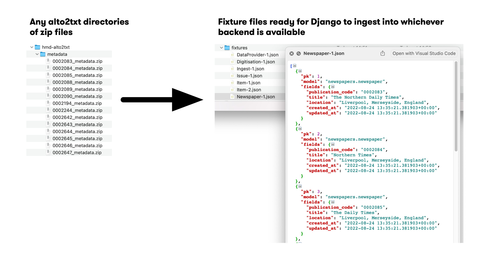

alto2txt2fixture



alto2txt2fixture is a standalone tool to convert alto2txt XML output and other related datasets into JSON (and where feasible CSV) data with corresponding relational IDs to ease general use and ingestion into a relational database.
We target the the JSON produced for importing into lwmdb: a database built using the Django python webframework database fixture structure.
Installation and simple use
We provide a command line interface to process alto2txt XML files stored locally (or mounted via azure blobfuse), and for additional public data we automate a means of downloading those automatically.
Installation
We recommend downloading a copy of the reposity or using git clone. From a local copy use poetry to install dependencies:
If you would like to test, render documentation and/or contribute to the code included dev dependencies in a local install:
Simple use
To processing newspaper metadata with a local copy of alto2txt XML results, it's easiest to have that data in the same folder as your alto2txt2fixture checkout and poetry installed folder. One arranged, you should be able to begin the JSON converstion with
To generate related data in JSON and CSV form, assuming you have an internet collection and access to a living-with-machines azure account, the following will download related data into JSON and CSV files. The JSON results should be consistent with lwmdb tables for ease of import.